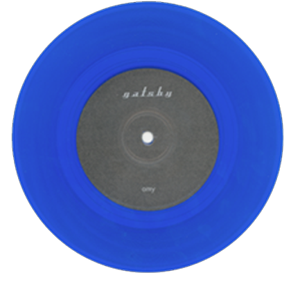

About This Release
Recorded in one day with Mike Quinn at Moontower Studio, these are the first Gatsby recordings as a four-piece. Released as a 7" on blue vinyl, this session finds the band turning a corner, becoming more honed and more focused. A follow-up session would yield three more songs and together would released as the "Five Songs" EP at a sold out release show at the Lizard Lounge. If it's possible for band that was only around for 6 years to have "salad days," well, these would probably be it.
Tracks
- 01 Amy
- 02 Pretend
Credits
Jay Figueroa - guitars
Scott Robinson - drums
Brandon Comstock - guitars, vocals
Alan Wuorinen - vocals, bass
Recorded, mixed and mastered with Mike Quinn at Moontower Studio, Cambridge.
Scott Robinson - drums
Brandon Comstock - guitars, vocals
Alan Wuorinen - vocals, bass
Recorded, mixed and mastered with Mike Quinn at Moontower Studio, Cambridge.
Press & Reviews
"There is something special about Gatsby. From the lyrics to the guitars to the rhythms, there is something both familiar and unique about this band."
— Northeast Performer